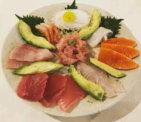

Keto Sashimi

KETO SASHIMI RECIPE
you CAN enjoy a wonderful array of the fresh seafood your sushi restaurant offers while on keto. Sashimi is your number one friend at a sushi restaurant. Sashimi consists of just the fish without the rice! So, you can enjoy that delicious salmon or tuna and not have to worry about carbs.
INGREDIENTS:
- 1 lb sashimi-grade tuna or salmon
- 2 tablespoons soy sauce
- 1 tablespoon rice vinegar
- 1 tablespoon sesame oil
- 1 teaspoon grated ginger
- 1 clove garlic, minced
- 1/4 teaspoon red pepper flakes
- 1 tablespoon chopped scallions
- 1 tablespoon toasted sesame seeds
STEPS:
- Rinse the sashimi-grade tuna or salmon and pat it dry with a paper towel. Cut it into thin slices and arrange them on a platter.
- In a small bowl, whisk together the soy sauce, rice vinegar, sesame oil, grated ginger, minced garlic, and red pepper flakes.
- Drizzle the sauce over the sashimi and sprinkle with chopped scallions and toasted sesame seeds.
- Serve immediately and enjoy your delicious keto sashimi!
Note: You can also add other keto-friendly toppings to your sashimi, such as sliced avocado, cucumber, or radish, to make it more flavorful and nutritious.